Standard Dialog Conversation
How to setup a Standard Conversation
How to Create a Standard Dialog Chain
Unlike a Simple Dialog Conversation, a Standard Conversation will get into Actions and Requirements that makes the conversation more flexible. This provides an opportunity for more custom conversations based on game data.
In Simple Dialog Conversation, we went through a simple conversation chain. We will now build upon this by making the conversation a bit more complex.
1) Using the John from Simple Dialog Conversation, Add New Response to the starting statement.
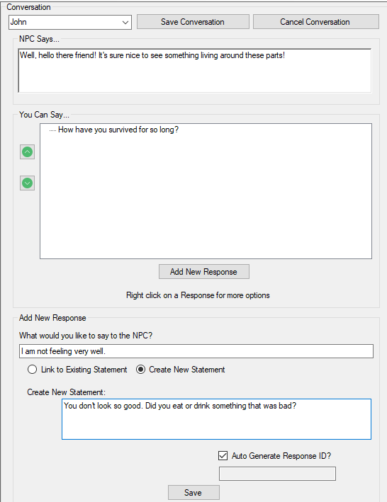
In What would you like to say to the NPC?, enter in "I am not feeling very well.", and create a new statement for the NPC to say back to you.
Click on Save when done.
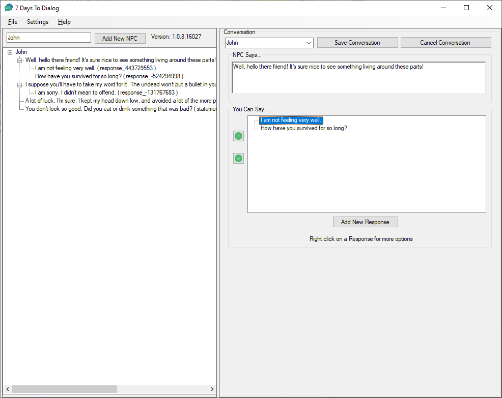
The new Statement and Response is added to John's conversations.
2) The player now has the option to say "I am not feeling very well." That is an odd thing to say if there is nothing wrong with the player. We can add a Requirement to the Response to Hide it, if the conditions are not right.
In this example, this Response will only be visible to the player when they have the buffDysenteryMain buff.
Right click on the Response in the You Can Say... box. A small context window appears with additional options.
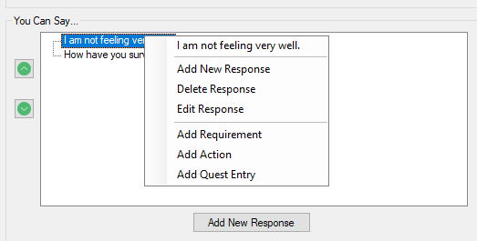
Select Add Requirement
In the Add Requirement pop up, select "HasBuffSDX, Mods", and enter in the buffDysenteryMain in the Buffs text box:
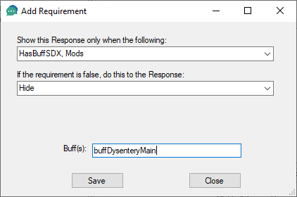
Click on Save.
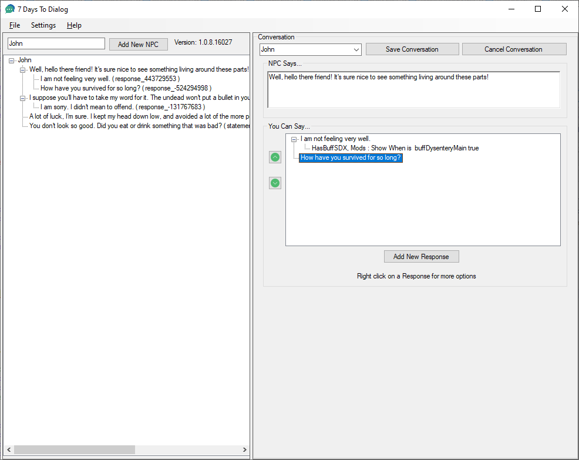
The Response "I am not feeling very well" will now only show up if the player has the buff.
3) Adding another Response that says the same thing.
A Response's text does not need to be unique. Multiple Responses can be on a particular statement that says the same thing, but lead to different statements when selected.
Click on Add New Response, and enter in "I am not feeling very well.", with a different statement.
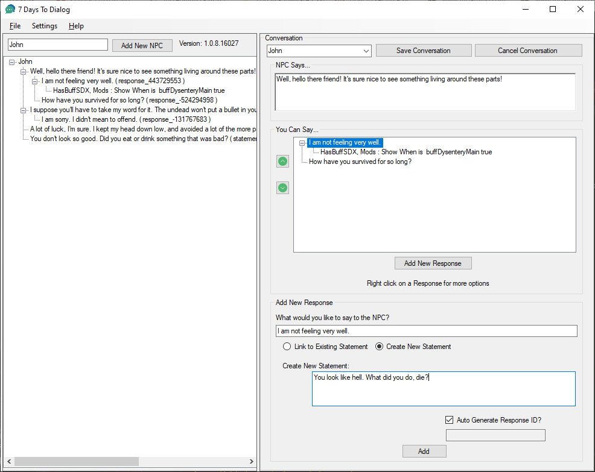
Click on Add and the new Response shows up.
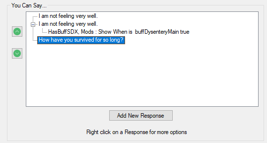
Right click on the new Response, and Add Requirement. This time, set the Requirement to be another buff: buffNearDeathTrauma
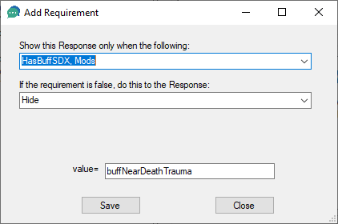
Click on Save to add the requirement to the response.
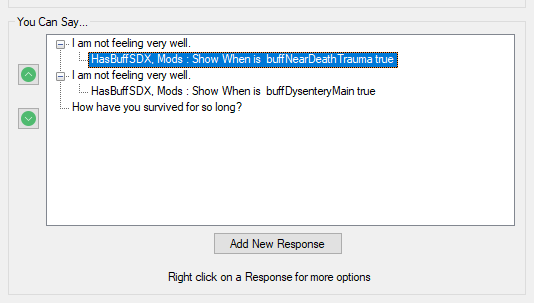
4) The You Can Say... now has two responses, based on two different conditions. Additional requirements can be added. For example, the player may have both buffs, leaving them confused about which response to select as both will show up.
Right click on the first "I am not feeling very well" response, and add a new Requirement. For this requirement, add another HasBuffSDX, Mods, and enter in the buffDystenteryMain buff. However, in this case, add an ! (exclamation mark) to the beginning of the buff name to reverse the check, passing the check if the player does not have the buffDysenteryMain buff.
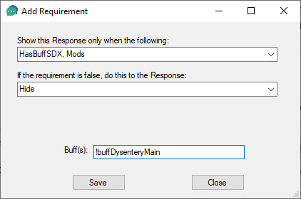
Click on Save.
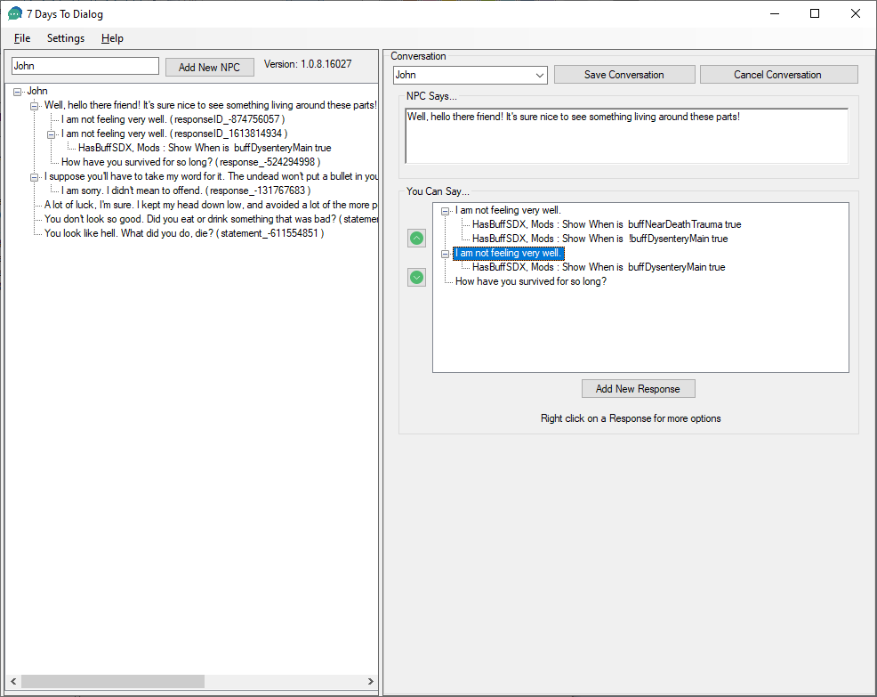
The first "I am not feeling very well." will only show up if the player has the buffNearDeathTrauma and does not have the buffDysenteryMain buff.
Created with the Personal Edition of HelpNDoc: Easy to use tool to create HTML Help files and Help web sites